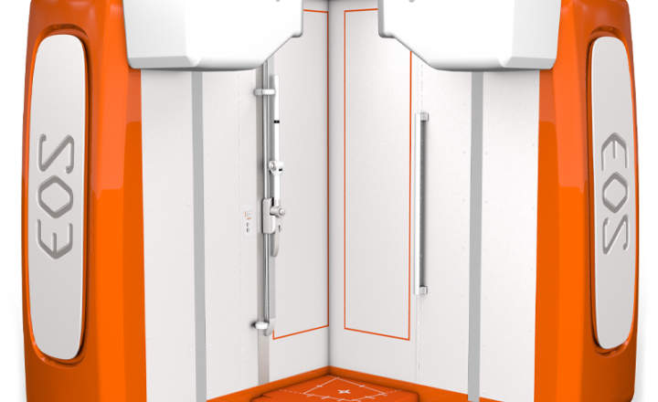
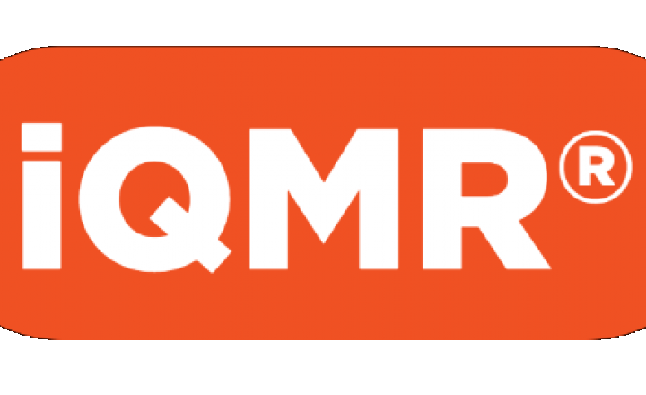
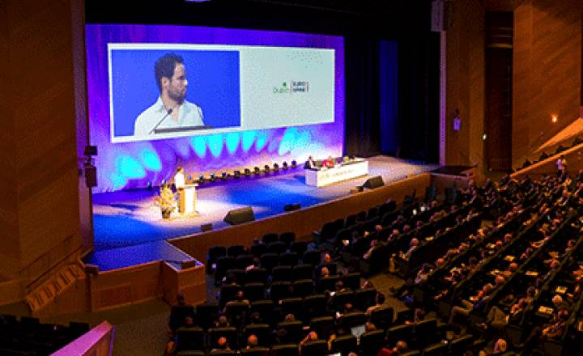
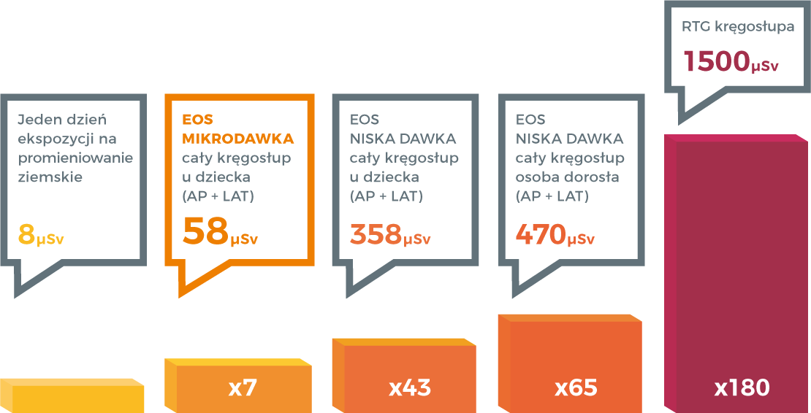
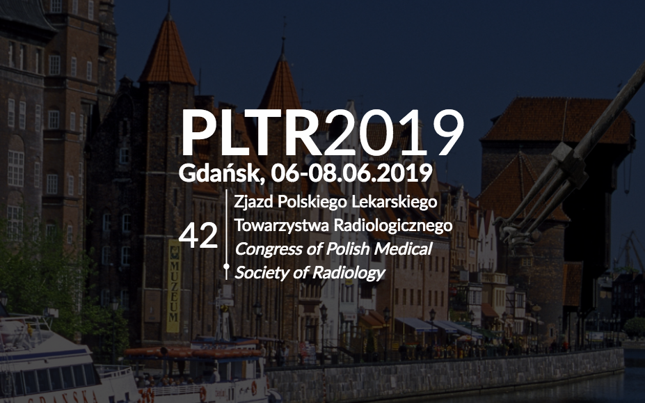
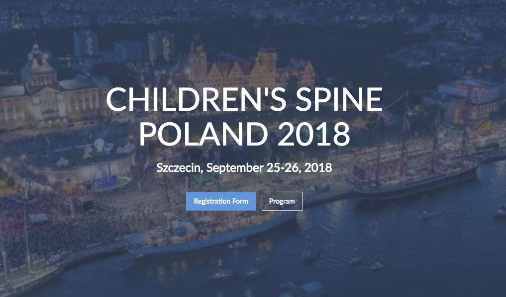

At Med and More Innovations, our mission is to provide innovative health
care solutions and services that result’s in superior patient care and satisfaction.
Firma Med and More Innovations powstała w 2010 roku. Jej misją jest zajęcie w
Polsce pozycji wiodącego dostawcy stosowanych w ochronie zdrowia produktów, systemów oraz usług
w zakresie onkologii ortopedycznej, robotyki w medycynie, neurochirurgii oraz radiologii.
Fundamentem firmy jest doskonała znajomość rynku, dzięki wieloletniemu
doświadczeniu naszych pracowników w branży medycznej oraz współpracy z firmami takimi jak
Johnson & Johnson, Stryker, Medtronic, czy Zimmer.
Rozumiejąc potrzeby dostawców usług medycznych, naszym celem jest oferowanie
najwyższej jakości produktów, systemów oraz usług, jak również zapewnienie wobec naszych
klientów najwyższych standardów etycznych.
NASZA MISJA
Wdrażać do sektora medycznego najnowsze i najskuteczniejsze systemy medyczne stworzone na kanwie światowej nauki.
NASZ CEL
Dostarczać innowacyjne rozwiązania medyczne i usługi skutkujące lepszej jakości opieką i satysfakcją pacjenta.
Med&More Innovations specjalizuje się w dostarczaniu rozwiązań dla branży medycznej. Nasze
produkty zapewniają możliwość przeprowadzenia wysokiej jakości diagnostyki obrazowej w:
- ortopedii i traumatologii
- chirurgii ortopedycznej
- neurochirurgii
- onkologii
- przesiewowych badaniach pediatrycznych pod kątem skoliozy
EOS jest pierwszym systemem, który pozwala radiologom zobrazować cały szkielet
pacjenta. Stworzony na podstawie technologii uhonorowanej Nagrodą Nobla daje
całkowicie nowe możliwości w planowaniu skutecznego zabiegu chirurgii ortopedycznej:
- wymiary naturalnej wielkości
- obrazowanie równowagi w płaszczyźnie strzałkowej
- pełny obraz kośćca
- brak zmiekształceń wertykalnych
- jednoczesne zdjęcie czołowe i boczne
- model 3D
To wszystko:
- przy istotnej redukcji ekspozycji na promieniowanie rentgenowskie
- szybkiej obróbce danych
- dzięki inwencji uhonorowanej Nagrodą Nobla
Istotne zmniejszenie dawki promieniowania
Dzięki automatycznej kontroli wzmocnienia noblowskiego detektora EOS oraz zdolności
do eliminowania rozproszonego promieniowania rentgenowskiego istnieje możliwość
wzmocnienia kontrastu przy mocno zmniejszonej dawce promieniowania. Co więcej z
otrzymanego za pomocą EOS'a obrazu, stacja sterEOS może stworzyć model 3D bez
potrzeby dodatkowego napromieniowania, wznosząc tym samym zasadę ALARA (As Low As
Reasonably Achieable) na nowy poziom.
Szybka obróbka danych:
- pełny obraz zaledwie w 20 sekund u dorosłych, a w 15 sekund u dzieci
- jednoczesne wykonywanie obrazów czołowych i bocznych
- obraz cyfrowy natychmiast dostępny w stacji roboczej
- czas trwania całej procedury poniżej 4 minut
Stacja sterEOS
Umożliwia wykonanie modelu 3D w każdej chwili po wykonaniu skanu czołowego i bocznego
co niesie dwie korzyści:
1. Trójwymiarowy model z obrazem równowagi w płaszczyźnie strzałkowej na
kręgosłupie oraz kończynach dolnych.
2. Automatyczną kalkulację parametrów klinicznych pozwalającą na ocenę defektu
postawy z nowej globalnej perspektywy, uwzględniającej naturalna pozycję
strzałkową szkieletu.
EOS PRZY PODŁĄCZENIU DO STACJI STEREOS OFERUJE RADIOLOGOM I ORTOPEDOM INNOWACYJNE I
DOTĄD NIEZNANE METODY DIAGNOZOWANIA PATOLOGII UKŁADU MIĘŚNIOWO - SZKIELETOWEGO
ZARÓWNO U DZIECI JAK I PACJENTÓW GERIATRYCZNYCH.
EOSedge

Jako lider w dziedzinie niskodawkowego obrazowania 2D / 3D, obrazowanie EOS zawsze
kwestionowało status quo w rozwiązaniach opartych na obrazach układu
mięśniowo-szkieletowego. Dzięki zaawansowanej nowej technologii i ulepszonym
funkcjom EOSedge to kolejny krok w łączeniu obrazowania z troską o dobro pacjenta.
iQMR

iQMR® (intelligent Quick Magnetic Resonance) bazujący na technologii wspomaganej
sztuczną inteligencją, umożliwia diagnostykę MRI przy użyciu szybkich protokołów na
każdym modelu aparatu, poprzez znaczące podwyższenie SNR(stosunku sygnał/szum) oraz
jakości obrazu. Zezwala na przyspieszenie badania MRI o 40%, jego produktywności o
35% przy zachowaniu a nawet wzmocnieniu jakości obrazu.
FDA(Amerykańska Agencja Leków i Żywności) od 2018 r. zezwala na używanie iQMR® do
badań MRI całego ciała
iQMR to dodatkowy system oprogramowania działający sieciowo. Łączy się ze wszystkimi
rezonansami magnetycznymi poprzez sieć DICOM. iQMR pobiera początkowe obrazy z dużą
ilością szumów, przetwarza je automatycznie i przesyła obrazy wysokiej jakości do
PACS i innych stacji diagnostycznych.
Badanie EOS - Bezpieczna alternatywa dla RTG.

Obecna wiedza na temat skutków ekspozycji na promieniowanie
rentgenowskie skłania świat medycyny do szukania nowych rozwiązań diagnostycznych.
Badanie EOS pozwala na znaczące obniżenie dawki promieniowania, przy jednoczesnym
zachowaniu jakości obrazów układu kostnego pacjenta.
Diagnostyka obrazowa jest jednym z podstawowych i jednocześnie
najważniejszych elementów procesu diagnostycznego w ortopedii i neurochirurgii.
Najpopularniejszą metodą obrazowania kośćca pacjenta jest standardowe zdjęcie RTG,
wykonywane przy użyciu promieniowania rentgenowskiego. Mimo dużej wartości
diagnostycznej, nie pozostaje ono bez wad. Częsta ekspozycja pacjenta na
promieniowanie X, emitowane podczas badania, może skutkować m. in. większą
zachorowalnością na nowotwory w przyszłości. Szczególnie ważne jest szukanie nowych
rozwiązań w przypadku prowadzenia pacjentów pediatrycznych. Wykazano, że
promieniowanie podczas badania kręgosłupa dziecka odpowiada tygodniowej ekspozycji
na świeżym powietrzu. Poniżej przedstawiamy graficzne porównanie wyników EOS oraz
standardowego RTG.

PLTR2019 Congress of Polish Medical Society of Radiology

Gdańsk, 06-08.06.2019 Dear Sir or Madam, Dear Colleagues and
Dear Colleagues,
The discovery of X-rays by Wilhelm Röntgen in 1895 changed the
face of medicine. Polish Radiology began to develop in the first days after the
announcement of this fact, which took place on January 5, 1896. In 1925, the Polish
Medical Radiological Society was established and its first Congress took place.
The next event, the largest Polish radiologists in the milieu, is
approaching - the 42nd PLTR Congress, which will be held in Gdańsk on 06-08 June
2019, at the AmberExpo conference center.
The tradition of our joint meetings, exchange of knowledge,
competences, achievements and experiences is almost 100 years old. You will be able
to take advantage of the "tailor-made" educational offer (workshops, meetings with
experts, plenary and satellite sessions), present your own research results or share
insights from everyday clinical work. We would like to encourage all of you -
radiologists, electroradiology technicians, nurses, physicists, engineers, students
and doctors of other specialties to submit works for oral and poster presentations
(dates are given on the website of the congress - radiologia2019.pl). We also invite
exhibitors to present their offer for the imaging diagnostics environment.
We also encourage reflection on the achievements of Polish and
global radiology as well as the assessment of the challenges and threats facing us.
Such a creative combination of history with the present and future will certainly be
favored by the atmosphere of a beautiful old town on the Motława River, wide beaches
and a modern, vibrant Tri-City.
Each conference is a meeting place for old friends, an opportunity
to meet new people, while the PLTR meeting is also a platform for establishing bonds
and a sense of pride in belonging to the radiological community.
See you in Gdansk on the 42nd PLTR Congress on 06-08 June 2019 !!!
KRĘGOSŁUP DZIECIĘCY – POLSKA 2018

Szczecin, September 25-26, 2018 Ladies and Gentlemen, Dear
Colleagues, Dear Colleagues,
On behalf of her, the Polish Society of Neurosurgeons, the Committee
of Neurological Sciences of the Polish Academy of Sciences and the Polish Society of
Spinal Surgery, I cordially invite you to take part in the Children's Spine - Poland
2018 conference, organized by the Department of Neurosurgery PUM. The conference
will be held in Szczecin on September 25-26, 2018.
The free conference is intended for children's neurosurgeons,
children's neurologists, pediatric orthopaedists and pediatricians from all over
Poland.
The theme of the congress will be diseases, deformations and spinal
injuries in children, in particular - core diseases, vertebrobasilar connections,
deformities, rare diseases, intraoperative monitoring, pathomorphology and
rehabilitation.
We hope that the meeting will not only be an opportunity to discuss
key problems of spine surgery, but also an unforgettable event that integrates our
environment.
EUROSPINE 2018
19-21 September 2018 Barcelona, Spain
Venue: CCIB – Barcelona International Convention Centre
Local Hosts: Luis Alvarez Galovich (Madrid)
Ferran Pellisé (Barcelona)
Juan Bago (Barcelona)